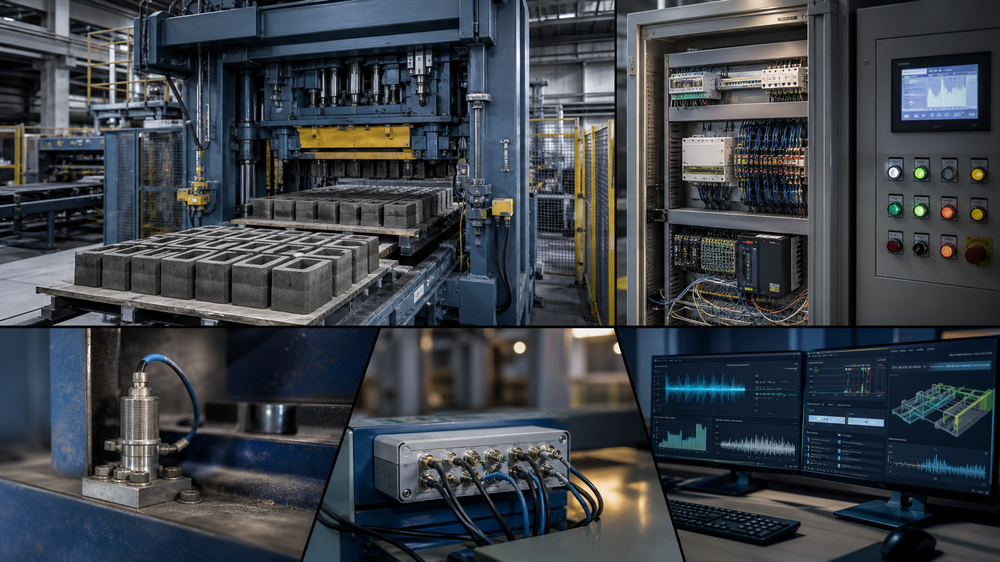
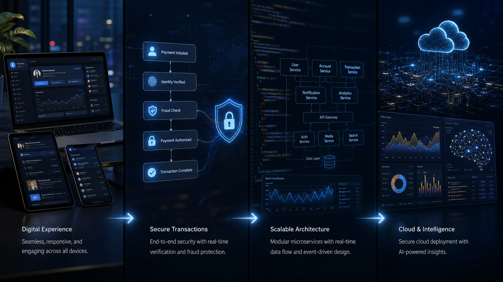
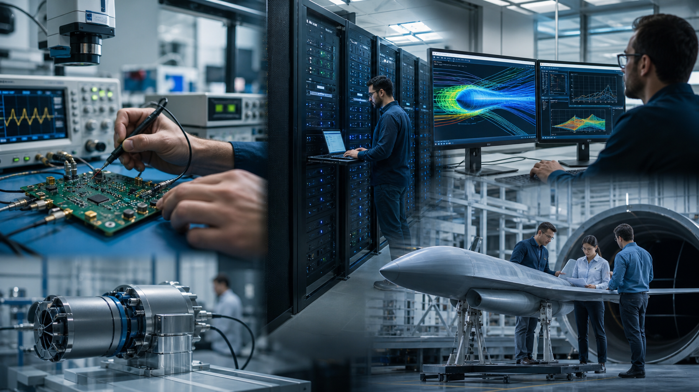
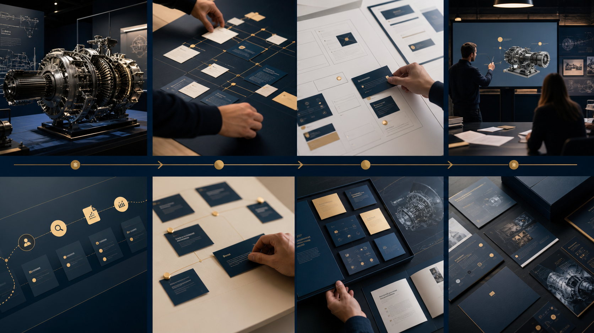

Trabajo aplicado.
Cuatro capacidades.
Una selección visual de experiencia industrial, desarrollo de plataformas, investigación tecnológica y mercadotecnia técnica.
Gervasi Automatizzazione
Desarrollo de sistemas de control, adquisición de datos, monitorización y mejora de procesos para maquinaria industrial en condiciones reales.

Espacio preparado para incorporar video real del proyecto.
DPIA.site
Diseño y construcción de una plataforma internacional con backend, microservicios, pagos, WebSockets, inteligencia artificial y despliegue cloud.

Espacio preparado para incorporar video real del proyecto.
INTI
Experiencia en sistemas embedded, adquisición y procesamiento de datos, computación de alto rendimiento y proyectos industriales y aeroespaciales.

Espacio preparado para incorporar video real del proyecto.
Mercadotecnia técnica
Posicionamiento, propuesta de valor, experiencia de usuario y materiales comerciales para que una solución técnica pueda comprenderse, presentarse y venderse.

Espacio preparado para incorporar video real del proyecto.